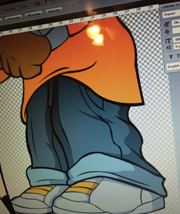
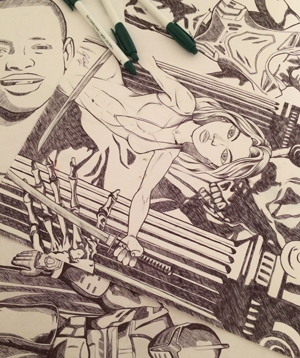
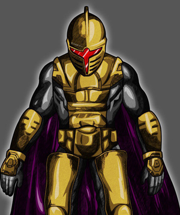
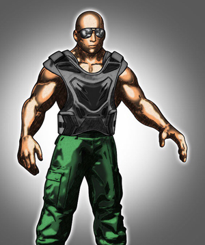

<!DOCTYPE html>
<html lang="en'>

<head>

	<meta charset="utf-8"/>
    <title>The Daniel Enterprise</title>
    
</head>

<body>
	<h1 id="top">The Daniel Enterprise</h1>
	
	<p>The Daniel Enterprise strives to: 
	<q>Provide quality and responsive web solutions with excellence.</q>
	We are determined to succeed.</p>
	
	<blockquote cite="http://alistapart.com/article/responsive-web-design">
	A building’s foundation defines its footprint, which defines its frame, which shapes the facade. Each phase of the architectural process is more immutable, more unchanging than the last. Creative decisions quite literally shape a physical space, defining the way in which people move through its confines for decades or even centuries.
	</blockquote>

	<h3>Full Service Firm</h3>
	
	<p>Jonathan Daniel is <abbr title="Cheif Executive Officer">CEO</abbr> of The Daniel Enterprise and brings more than 13 years of graphic design experience to the table.</p>

	<h2>Web Design/Development, Digital Art</h2>

	<ul>
		<li><a href=#web_design>Web Design/Development</a></li>
		<li><a href=#digital_art>Digital Art</a></li>
	</ul>
	
	<p>The Daniel Enterprise possesses the skills and disciplines necessary to deliver <strong>responsive and well designed</strong> web development solutions to small business as well as the corporate entities. We are a full service web design/development and digital art firm located in White Hall, AR. We take on web tasks as well as Digital Art that we produce for a variety of mediums.</p>

	<h2 id=web_design>Web Design/Development</h2>

	<h3>Responsive is Key</h3>

	<p>Using professional grade HTML5, CSS3, and JavaScript Knowledge, The Daniel Enterprise treats every web project with delicacy by checking and verifying code while troubleshooting and correcting errors every step of the way to ensure a successful presentation of your web solution. In response to the ever growing number of devices that will potentially browse to your site, we use tools geared toward the production of <em>dynamic and responsive</em> websites and applications that stand the test of time when adapting and changing to be viewed properly for all users.</p>

	<ul>
    	<li>briefing</li>
    	<li>mood board</li>
    	<li>Design</li>
    	<li>Development</li>
    	<li>Debugging</li>
    	<li>Launch</li>
	</ul>

	<h3>Overview of Design Process</h3>    
    
    <ol>
        <li>Wireframe</li>
        <li>Completion of Design in Photoshop</li>
        <li>Slicing</li>
        <li>Preparing Files for Developments Stage</li>
    </ol>

	<h2 id=digital_art>Digital Art</h2>

	<p>The Daniel Enterprise offers digital art for purchase and download. These works are added weekly and can be ordered as a print from my profile on DeviantArt.com.</p>

	
	<h3>Images</h3>


	<figure>
			<a href=images/browspencil.jpg></a>
	
				<figcaption>
					This is JD Eyebrows with a Giant Pencil
				</figcaption>
		
	</figure>


	<br>

	<figure>
			<a href=images/browsunfinished.jpg></a>
			
				<figcaption>
					This is JD Eyebrows with a Giant Pencil Unfinished
				</figcaption>

	</figure>

	<br>

	<figure>
			<a href=images/ink.jpg></a>
	
				<figcaption>
					These are several original drawings
				</figcaption>
		
	</figure>

	<br>

	<figure>
			<a href=images/sandalorian.jpg></a>
	
				<figcaption>
					This is a Mandolorian Soldier
				</figcaption>
		
	</figure>

	<br>

	<figure>
			<a href=images/warrior.jpg></a>
	
				<figcaption>
					This is a vigilante warrior
				</figcaption>
		
	</figure>

	<br>


	<a href="#top">Top</a>
</body>

</html>


 
